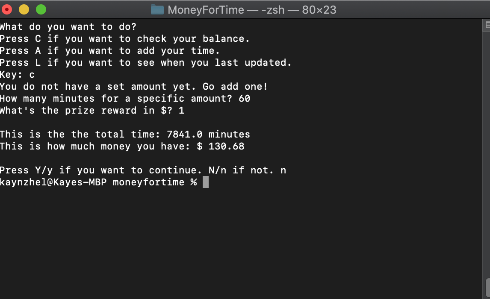

Using SQLite for Money for Time
Throughout the pandemic, I have been finding various ways to motivate myself. One that I thought of during the first few weeks of the second semester, I thought of rewarding myself a dollar for every hour that I spend studying. After the semester ends, I will use how much money I gain for my personal birthday present! Then I asked myself, what better way to store and retrieve data is to make a program yourself, right? So with that, I did; I created Money for Time.
It was useful in many ways: (1) it allowed me to keep track of how much time I am putting in for school, (2) it allowed me to have some incentive to do good (hooray for birthdays!), and (3) it was a great learning process.
Changing to SQLite
At first, I only used text files to store my data: one for the actual time inputs and one for when I last updated (date and time). Storing it in text files was completely doable for personal use (i.e. just for me), however, I wanted to use what I learned from CMPUT 291 (uAlberta’s introductory course to File and Database Management). From there, I integrated SQLite to my Python files to accomplish this task.

A screenshot of the “C” command of the program
I am happy with how it turned out. I have been using this program a few times every week since I made its first version, and I look forward to improving it more!
Written: April 04, 2021
Made with: stackedit.io
Edited locally by: Kaye Misay